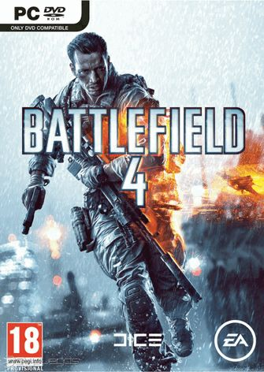
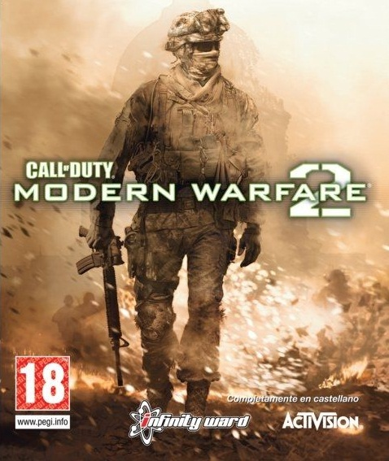
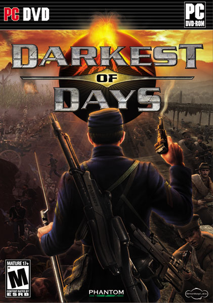
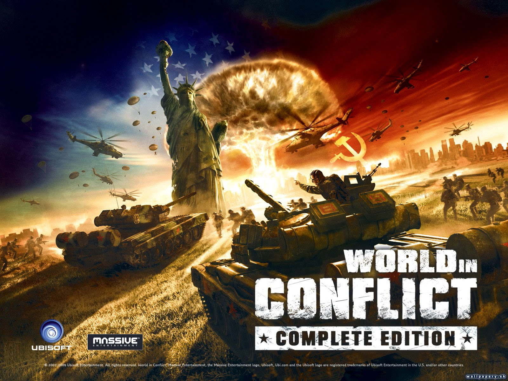

Categoria guerra

Battlefield 4
Descripcion
Battlefield 4 (comúnmente abreviado como BF4) fue desarrollado por la compañía EA Digital Illusions CE (DICE) y distribuido por Electronic Arts (EA) para Microsoft Windows, Xbox 360, Xbox One, PlayStation 3 y PlayStation 4. Es la decimotercera entrega de la serie Battlefield y el sucesor del aclamado juego de 2011, Battlefield 3. Fue lanzado oficialmente el 31 de octubre de 2013.1
Categoria guerra

Call of Duty Modern Warfare 2
Descripcion
Call of Duty: Modern Warfare 267 (conocido previamente como Modern Warfare 2, MW2 o Call of Duty 6)89 es un videojuego de acción en primera persona (aunque hay algunos modos de juego en tercera persona) desarrollado por Infinity Ward. Es la sexta entrega de la serie Call of Duty y sucesora directa de Modern Warfare, cuarto de la serie.10 Salió a la venta el 10 de noviembre de 2009 y fue distribuida por Activision. Con más de 20 millones de copias vendidas en total entre: Xbox 360, Playstation 3 y PC.11 La historia comienza 5 años después de Modern Warfare. Imran Zakhaev, el antagonista de la primera parte, fue declarado héroe de la nueva Rusia y se le homenajeó con un monumento y poniendo su nombre al Aeropuerto Internacional de Moscú-Sheremétievo. Esta vez el jugador asumirá los personajes de Joseph Allen, un soldado de los Rangers en las primeras misiones, para luego dar lugar a James Ramírez y el sargento Gary Roach Sanderson de la Task Force 141. Esta vez el antagonista principal es Vladimir Makarov, un antiguo discípulo de Zakhaev, quien luego de un ataque terrorista logra que los Estados Unidos, su país más odiado, sea invadido por Rusia. Aunque al final del juego el jugador se da cuenta que no es él su mayor enemigo, sino la persona que menos se imagina.
Categoria guerra

Darkest of Days
Descripcion
arkest of Days es un videojuego de disparos en primera persona desarrollado por 8monkey Labs y publicado por Phantom EFX . Originalmente lanzado para Xbox 360 , también fue lanzado para Microsoft Windows a través de Steam . El 30 de diciembre de 2010, la programación virtual publicó la versión Mac OS X del juego. [1] La trama del juego implica el viaje en el tiempo; presenta las Guerras Indias Americanas , la Guerra Civil Americana , la Primera Guerra Mundial , la Segunda Guerra Mundial y la Antigua Roma .
Categoria guerra

Gears of War 3
Descripcion
Gears of War 3 es un videojuego de disparos en tercera persona, del género survival horror y acción-aventura, desarrollado por Epic Games y publicado por Microsoft Game Studios exclusivamente para Xbox 360.2 Es la tercera entrega de la serie Gears of War y el juego final en la historia del arco.3 Se publicó el 20 de septiembre de 2011.4 El 31 de mayo se dio a conocer una precuela de este juego Gears of War: Judgment.
Categoria guerra
